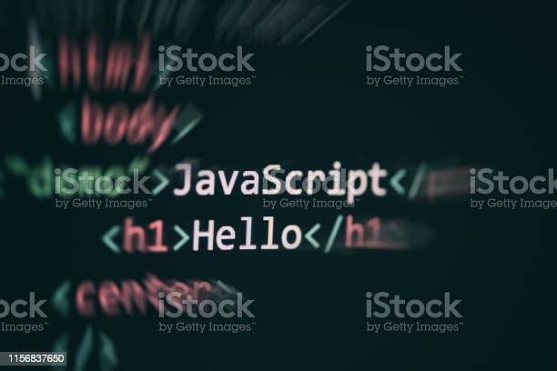

- html
- CSS
- JavaScript
javaScript란 무엇인가?
JavaScript는 웹 페이지를 동적으로 만들고 상호작용성을 추가하는 데 사용되는 프로그래밍 언어입니다. HTML과 CSS와 함께 웹 개발의 핵심 구성 요소로 사용되며, 웹 브라우저에서 실행되는 클라이언트 사이드 스크립트 언어입니다.

JavaScript를 사용하면 웹 페이지에 동적인 기능을 추가할 수 있습니다. 예를 들어, 사용자의 입력에 따라 웹 페이지의 내용이 변경되거나, 버튼 클릭에 대한 이벤트를 처리하거나, 웹 페이지에서 데이터를 가져와 표시하는 등의 작업을 수행할 수 있습니다.
이는 웹 페이지의 텍스트, 이미지, 링크, 동영상 등 다양한 요소를 구조화하고, 웹 페이지 내에서 각 요소의 위치와 특성을 정의하는 역할을 합니다.